About
I am a Research Scientist at the Center for Advanced AI, Accenture, where I work on LLM post-training.
I got my ECE Ph.D. from University of Wisconsin–Madison, where I was advised by Pedro Morgado and Yu Hen Hu.
My research interests lie at the intersection of computer vision and deep learning. I focus on Code Large Language Models (Code LLMs), Multimodal Large Language Models (MLLMs), and improving the efficiency of self-supervised learning models in both training and inference.
I've been fortunate to work with really great people along the way. From Spring to Winter 2024, I was a research intern at Microsoft, working with Yunsheng Li, Weijian Xu, and Mengchen Liu. In Summer 2022, I was a research intern at TikTiok, working with Yu Tian, Linjie Yang, Haichao Yu and Heng Wang. In Summer 2021, I was a research intern at NEC Labs America , working with Farlay Lai and Asim Kadav. At Academia Sinica, I was a research assistant working with Chu-Song Chen. I graduated from National Tsing Hua University with an M.S. in Computer Science, where I was advised by Jia-Shung Wang.
I got my ECE Ph.D. from University of Wisconsin–Madison, where I was advised by Pedro Morgado and Yu Hen Hu.
My research interests lie at the intersection of computer vision and deep learning. I focus on Code Large Language Models (Code LLMs), Multimodal Large Language Models (MLLMs), and improving the efficiency of self-supervised learning models in both training and inference.
I've been fortunate to work with really great people along the way. From Spring to Winter 2024, I was a research intern at Microsoft, working with Yunsheng Li, Weijian Xu, and Mengchen Liu. In Summer 2022, I was a research intern at TikTiok, working with Yu Tian, Linjie Yang, Haichao Yu and Heng Wang. In Summer 2021, I was a research intern at NEC Labs America , working with Farlay Lai and Asim Kadav. At Academia Sinica, I was a research assistant working with Chu-Song Chen. I graduated from National Tsing Hua University with an M.S. in Computer Science, where I was advised by Jia-Shung Wang.
Publications
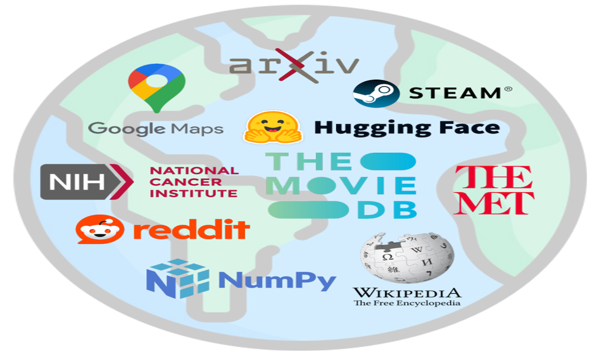
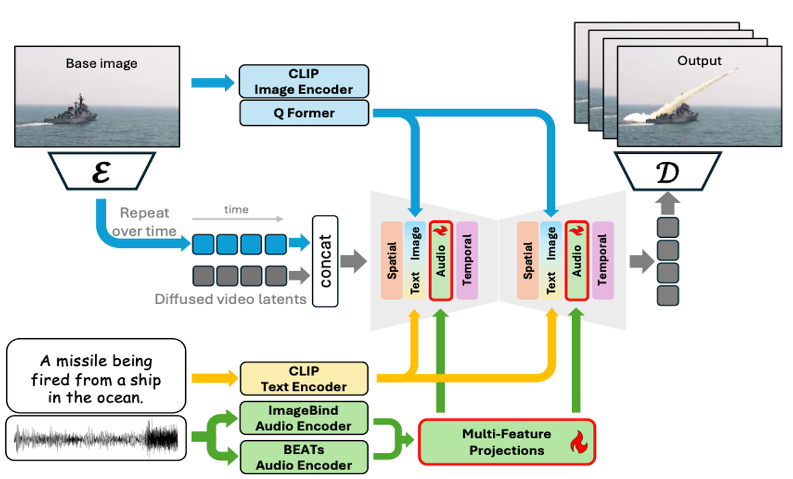
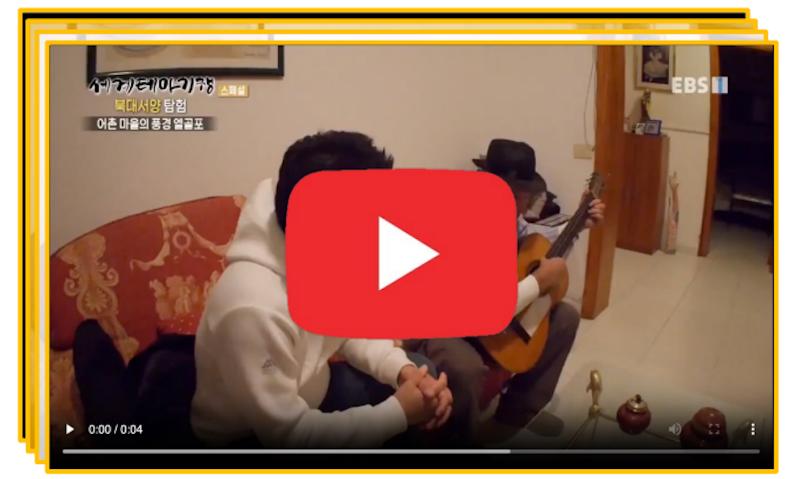
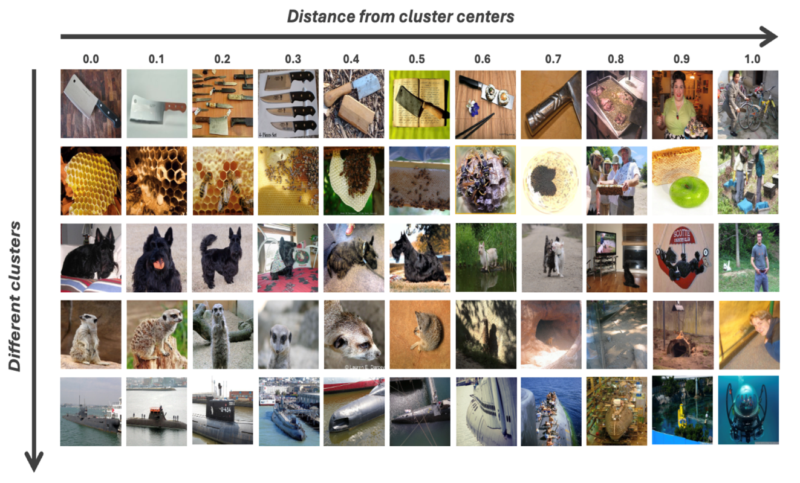
From Prototypes to General Distributions: An Efficient Curriculum for Masked Image Modeling
Conference on Computer Vision and Pattern Recognition (CVPR), 2025
Patch Ranking: Efficient CLIP by Learning to Rank Local Patches
Winter Conference on Applications of Computer Vision (WACV), 2025
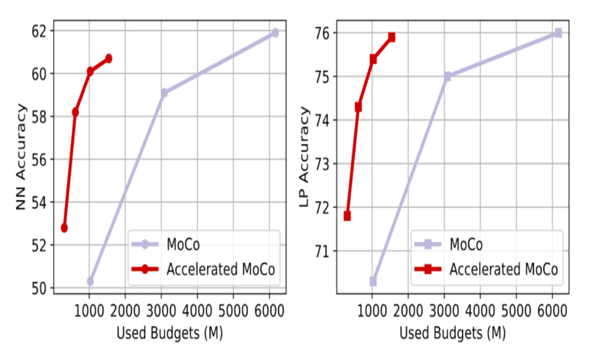
Accelerating Augmentation Invariance Pretraining
Conference on Neural Information Processing Systems (NeurIPS), 2024
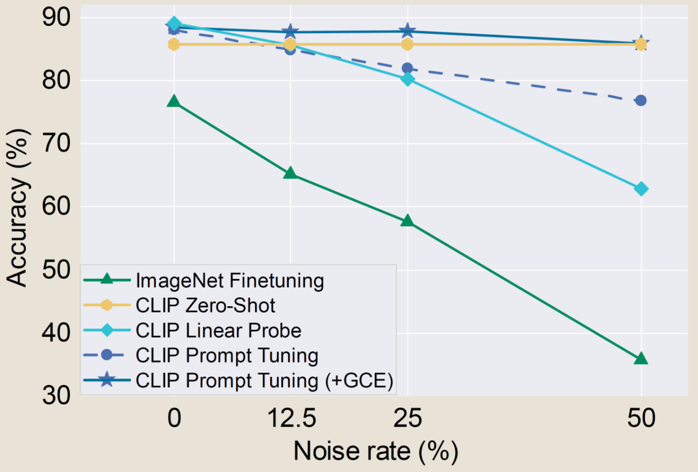
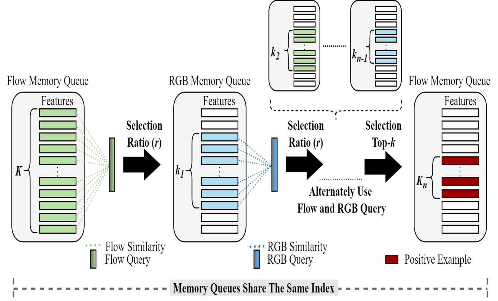
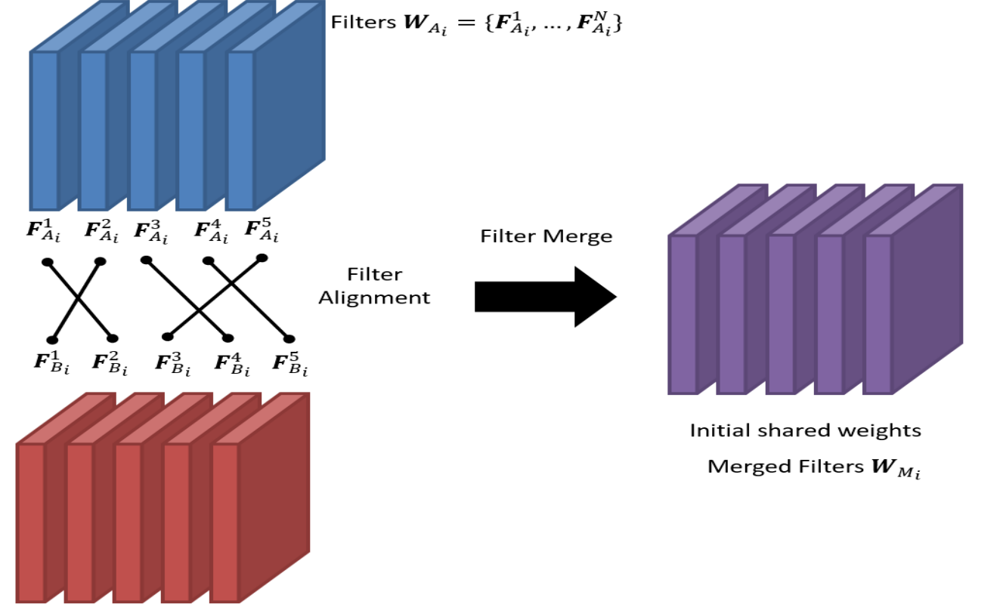
Merging Well-Trained Deep CNN Models for Efficient Inference
Asia-Pacific Signal and Information Processing Association Annual Summit and Conference (APSIPA), 2020
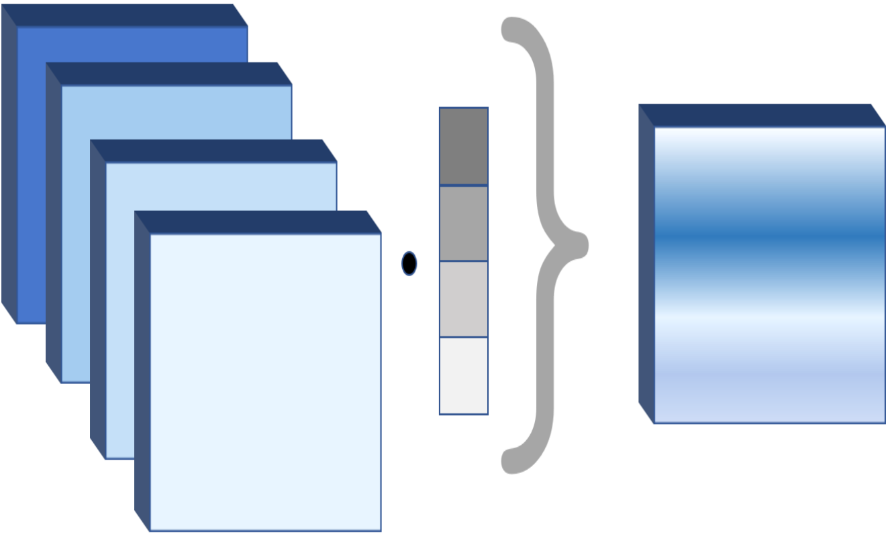
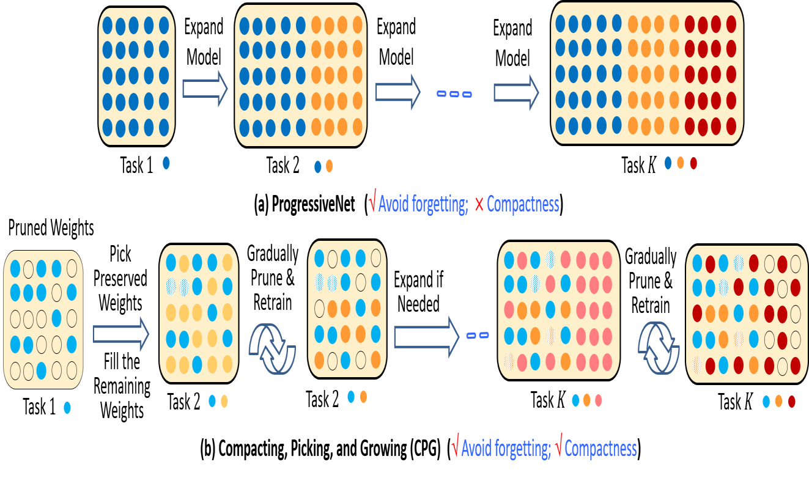
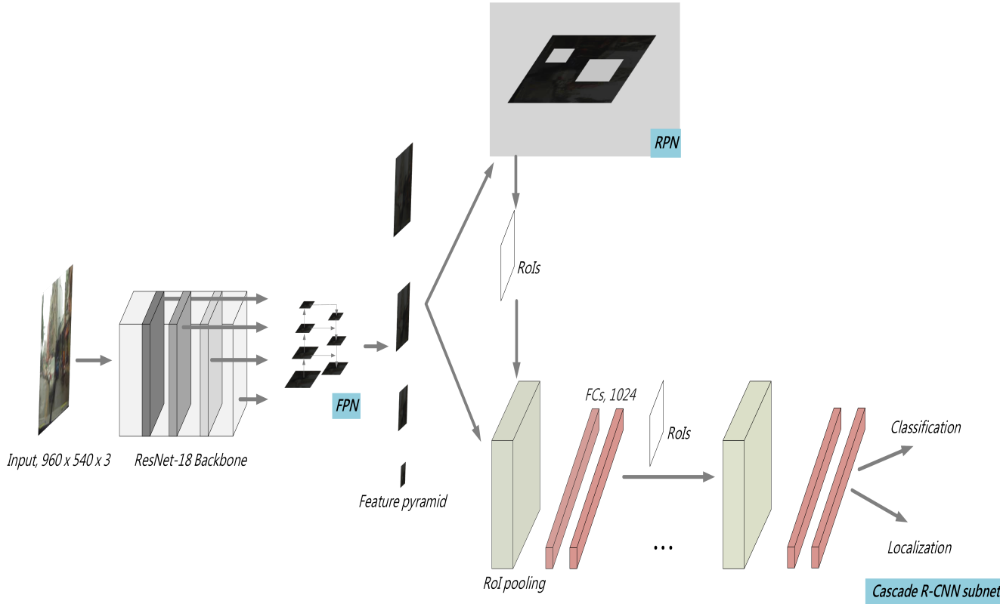
IMMVP: An Efficient Daytime and NighttimeOn-Road Object Detector
IEEE International Workshop on Multimedia Signal Processing (MMSP), 2019
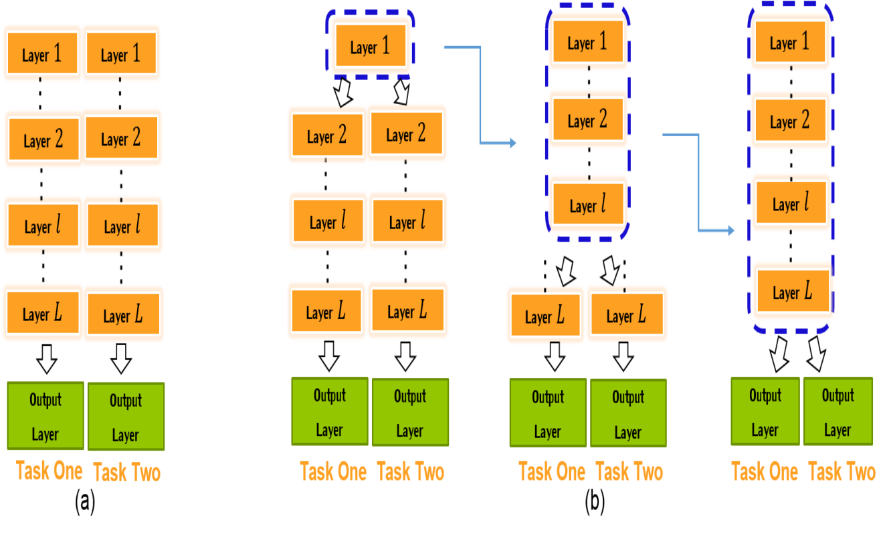
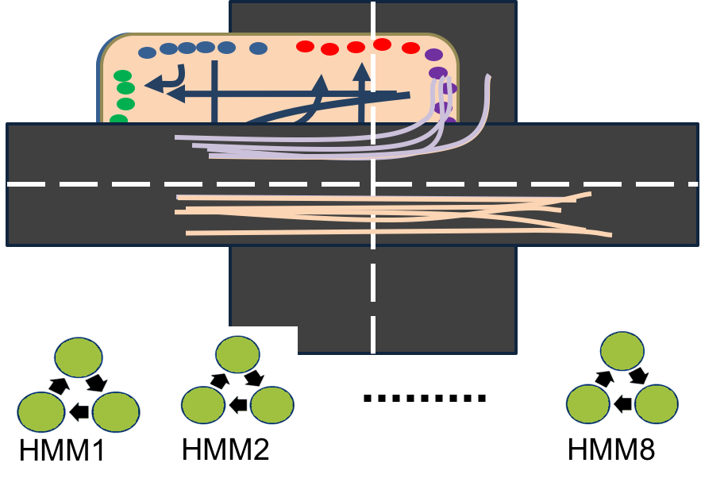
Traffic pattern modeling, trajectory classification
and vehicle tracking within urban intersections
IEEE International Smart Cities Conference (ISC2), 2017
Work Experience

Microsoft
Feb. 2024 - Dec. 2024
Redmond, WA
TikTok
May 2022 - Aug. 2022
San Jose, WA
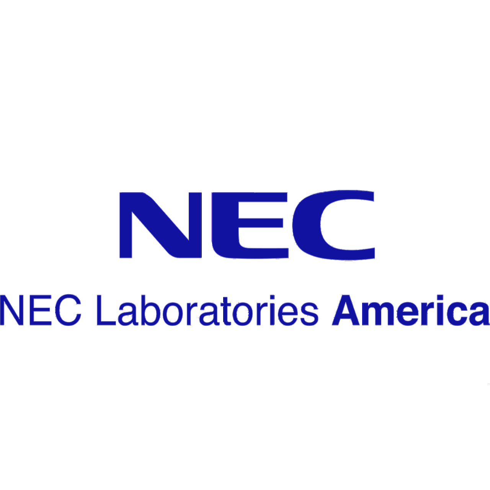
NEC Labs America
May 2021 - Aug. 2021
Princeton, NJ

Academia Sinica
Mar. 2018 - Aug. 2020
Taipei, Taiwan
MediaTek Inc.
Mar. 2017 - Mar. 2018
Hsinchu, Taiwan
Realtek Inc.
Dec. 2016 - Mar. 2017
Hsinchu, Taiwan
GOTrust Technology Inc.
Jan. 2014 - Jun. 2014
Taichung, Taiwan